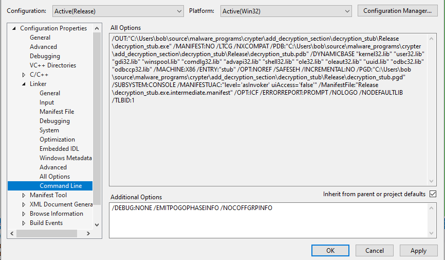
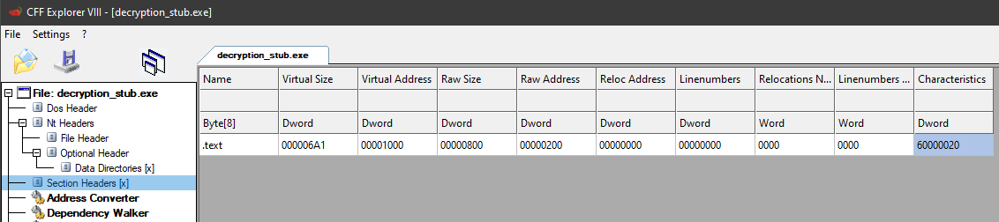

# Completely Remove Debug Directory in .rdata
https://stackoverflow.com/questions/45538668/remove-image-debug-directory-from-rdata-sectionVisual Studio Compiler OptionsLinker > Debugging > Generate Debug Info
NoLinker > Optimizations > References
No (/OPT:NOREF)Linker > Optimizations > Link Time Code Generation
/LTCGLinker > Command Line
/DEBUG:NONE /EMITPOGOPHASEINFO /NOCOFFGRPINFO/DEBUG:NONE removes .pdb information.
/EMITPOGOPHASEINFO removes profile guided optimizations
Those 2 options together will get rid of most of the debug info
Leftover is the TimeDateStamp
/LTCG,
/OPT:NOREF, and
/NOCOFFGRPINFO delete that. No idea how/why.
(just shows the Command Line tab)
No Debug Directory in .rdata (a no .rdata at all)!
(this is with extra compiler options too, however. Refer to Shellcode > Writing Loader Shellcode for that)
